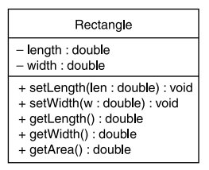
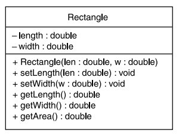

!pip3 install tutormagic
%load_ext tutormagic
import warnings
warnings.filterwarnings("ignore", category=DeprecationWarning)
# Run and print a shell command.
def run(cmd):
print('>> {}'.format(cmd))
!{cmd} # This is magic to run 'cmd' in the shell.
print('')
def compile(nombre_clase):
run('javac {}.java'.format(nombre_clase))
def execute(nombre_clase):
run('java {}'.format(nombre_clase))
def ejecutar(nombre_clase):
compile(nombre_clase)
execute(nombre_clase)
# Check the Java version to see if everything is working well.
run('javac -version')
Clases y objetos¶
Temario¶
¿Que son los objetos?
¿Que son las clases?
Declaración de una clase¶
class NombreClase {
Lista_de_miembros
}
Donde:
NombreClase: es definido por el usuario e identifica a la clase; puede incluir letras, números y subrayados como cualquier identificador válido.
Lista_de_miembros son métodos y datos miembros de la clase.
La forma general cuando se codifica una clase es la siguiente:
A continuación se muestra un ejemplo donde se emplea este formato.
Ejemplo 1
Definición de una clase llamada Punto que contiene coordenadas x-y de un punto en un plano.
class Punto {
private int x; // coordenada x
private int y; // coordenada y
public Punto(int x_,int y_) // constructor
{
x = x_;
y = y_;
}
public Punto() // constructor sin argumentos
{
x = y = 0;
}
public int LeerX() // devuelve el valor de x
{
return x;
}
public int LeerY() // devuelve el valor de y
{
return y;
}
void fijarX(int valorX) // establece el valor de x
{
x = valorX;
}
void fijarY(int valorY) // establece el valor de y
{
y = valorY;
}
}
Creación de un objeto¶
Formato para definir una referencia¶
NombreClase varReferencia;
Formato crear un objeto¶
varReferencia = new NombreClase(argmntos_constructor);
Ejemplo 2
Declarar un objeto tipo punto cuyas coordenadas sean (2,3):
Por partes
Punto p1; // Definiendo la referencia
p1 = new Punto(2,3); // Creando el objeto
Todo en uno:
Punto p1 = new Punto(2,3); // Definiendo la referencia y creando el objeto en una sola instrucción
Declarar un objeto tipo punto cuyas coordenadas sean (0,0):
Forma 1:
Punto p1 = new Punto(0,0);
Forma 2:
Punto p1 = new Punto();
Ejemplo 3
Hacer un programa que declare tres puntos A(3,-3), B(0,0) y C(2,5)
%%tutor -l java -k
public class Punto {
private int x; // coordenada x
private int y; // coordenada y
public Punto(int x_,int y_) // constructor
{
x = x_;
y = y_;
}
public Punto() // constructor sin argumentos
{
x = y = 0;
}
public int LeerX() // devuelve el valor de x
{
return x;
}
public int LeerY() // devuelve el valor de y
{
return y;
}
void fijarX(int valorX) // establece el valor de x
{
x = valorX;
}
void fijarY(int valorY) // establece el valor de y
{
y = valorY;
}
public static void main(String[] args) {
Punto A = new Punto(3,-3);
Punto B = new Punto();
Punto C = new Punto(2,3);
}
}
En el siguiente enlace se puede correr el programa anterior online (Nota: Se hicieron unas cuantas modificaciones).
Diagramas UML¶
Cuando se diseña una clase, a menudo es útil dibujar un diagrama UML (Unified Modeling Language). Este diagrama proporsiona una manera estandar de representar graficamente sistemas orientados a objetos. El diagrama UML de una clase consiste en una caja rectangular que se divide en 3 secciones:
Sección superior: contiene el nombre de la clase.
Sección central: contiene los atributos de la clase.
Sección inferior: contiene los métodos de la clase.
La siguiente figura detalla esto:
Ejemplo 4
Dibuje el diagrama UML de una clase asociada a un rectangulo. Posterior a esto proceda a codificar en java dicha clase. Recuerde la forma general de codificar una clase:
AccessSpecifier class Name {
Members
}
El diagrama UML asociado a esta clase se muestra a continuación:
Siguiendo el diagrama anterior el codigo java de la clase se muestra a continuación:
%%tutor -l java -k
class Rectangle
{
private double length;
private double width;
/**
The setLength method stores a value in the
length field.
@param len The value to store in length.
*/
public void setLength(double len)
{
length = len;
}
/**
The setWidth method stores a value in the
width field.
@param w The value to store in width.
*/
public void setWidth(double w)
{
width = w;
}
/**
The getLength method returns a Rectangle
object's length.
@return The value in the length field.
*/
public double getLength()
{
return length;
}
/**
The getWidth method returns a Rectangle
object's width.
@return The value in the width field.
*/
public double getWidth()
{
return width;
}
/**
The getArea method returns a Rectangle
object's area.
@return The product of length times width.
*/
public double getArea()
{
return length * width;
}
}
/**
This program demonstrates the Rectangle class's
setLength, setWidth, getLength, getWidth, and
getArea methods.
*/
public class RectangleDemo
{
public static void main(String[] args)
{
// Create a Rectangle object.
Rectangle box = new Rectangle();
// Set length to 10.0 and width to 20.0.
box.setLength(10.0);
box.setWidth(20.0);
// Display the length.
System.out.println("The box's length is " +
box.getLength());
// Display the width.
System.out.println("The box's width is " +
box.getWidth());
// Display the area.
System.out.println("The box's area is " +
box.getArea());
}
}
En el siguiente enlace se muestra el codigo para la ejecución online.
Especificadores de acceso¶
Para controlar el acceso a los miembros de la clase se utilizan tres diferentes especificadores de acceso: public, protected y private. La siguiente figura muestra un caso de uso de un especificador de acceso:
Cada miembro está precedido del especificador de acceso que le corresponde y puede ser:
private
public
protected (este sera analizado luego).
Veamos los 2 primeros casos:
Private¶
Cuando el especificador de acceso privado se aplica a un miembro de la clase, no se puede acceder al miembro desde código fuera de la clase. El miembro sólo pueden ser accedidos por métodos que son miembros de la misma clase. Definir un atributo como privado hace que un dato sea protegido de accidental corrupción.
class NombreClase {
private declaración miembro privado; // miembros privados
...
Public¶
Cuando un miembro de la clase tiene como especificador de acceso public, dicho miembro puede ser accedido por cualquier código interior o exterior a la clase.
class NombreClase {
public declaración miembro privado; // miembros publicos
...
Ejemplo 5
En el siguiente ejemplo se muestran las clases Foto y Marco con miembros declarados con distinta visibilidad; ambas forman parte del paquete soporte.
package soporte;
class Foto {
private int nt;
private char opd;
String q;
public Foto(String r) // constructor
{
nt = 0;
opd = 'S';
q = new String(r);
}
public double mtd(){...}
}
class Marco {
private double p;
String t;
public Marco() {...}
public void poner()
{
foto u = new Foto("Paloma");
p = u.mtd();
t = "**" + u.q + "**";
}
}
Aunque las especificaciones públicas, privadas y protegidas pueden aparecer en cualquier orden, en Java los programadores suelen seguir una de las siguientes reglas en el diseño:
Poner los miembros privados primero debido a que contiene los atributos o datos.
Poner los miembros públicos primero debido a que los métodos y los constructores son la interfaz del usuario de la clase.
La labor más importante de los especificadores de acceso es implementar la ocultación de la información; este principio indica que toda la interacción con un objeto se debe restringir al uso de una interfaz bien definida que permita que los detalles de implementación de los objetos sean ignorados, asi:
Los datos y métodos públicos forman la interfaz externa del objeto.
Los elementos privados son los aspectos internos que no necesitan ser accesibles para su uso.
Los elementos de una clase sin especificador y los protected tienen las mismas propiedades que los públicos respecto a las clases del paquete.
Métodos de una clase¶
Los métodos en Java siempre son miembros de clases
No hay métodos o funciones fuera de ellas
Su implementación se incluye dentro del cuerpo de la clase
Ejemplo 6
Definir una clase DiaAnyo que contenga los atributos mes y día, los métodos igual() y visualizar(). Que el mes se registre como un valor entero: 1, Enero; 2, Febrero y así sucesivamente; el día del mes debe registrarse en la variable entera día. Escribir un programa que compruebe si una fecha es su cumpleaños. El método main() de la clase principal, Cumple, crea un objeto DiaAnyo y llama al
método igual() para determinar si la fecha del objeto coincide con la fecha de su cumpleaños, que se ha leído del dispositivo de entrada.
Solución: A continuación se muestra el archivo asociado a la clase DiaAnyo (DiaAnyo.java)
import java.io.*;
import java.util.*;
class DiaAnyo {
private int mes;
private int dia;
public DiaAnyo(int d, int m) {
dia = d;
mes = m;
}
public boolean igual(DiaAnyo d) {
if ((dia == d.dia) && (mes == d.mes))
return true;
else
return false;
}
public void visualizar() {
System.out.println("mes = " + mes + " , dia = " + dia);
}
}
A continuación, se muestra la clase (Main.java) que contiene el método principal:
// clase principal, con método main
public class Cumple {
public static void main(String[] ar)throws IOException {
DiaAnyo hoy;
DiaAnyo cumpleanyos;
int d, m;
Scanner entrada = new Scanner(System.in);
System.out.print("Introduzca fecha de hoy, dia: ");
d = entrada.nextInt();
System.out.print("Introduzca el número de mes: ");
m = entrada.nextInt();
hoy = new DiaAnyo(d,m);
System.out.print("Introduzca su fecha de nacimiento, dia: ");
d = entrada.nextInt();
System.out.print("Introduzca el número de mes: ");
m = entrada.nextInt();
cumpleanyos = new DiaAnyo(d,m);
System.out.print( " La fecha de hoy es ");
hoy.visualizar();
System.out.print( " Su fecha de nacimiento es ");
cumpleanyos.visualizar();
if (hoy.igual(cumpleanyos))
System.out.println( "¡Feliz cumpleaños ! ");
else
System.out.println( "¡Feliz dia ! ");
}
}
El programa anterior completo se puede compilar online en el siguiente enlace.
Implementación de clases¶
El código fuente de la definición de una clase con todos sus métodos y variables instancia se almacenan en archivos de texto con extensión .java y con el nombre de la clase.
La implementación de cada clase normalmente se sitúa en un archivo independiente y éstas pueden proceder de diferentes fuentes:
Declarar e implementar las propias; el código fuente siempre estará disponible y pueden organizarse por paquetes.
Utilizar clases escritas por otras personas o compradas; en este caso, se puede disponer del código fuente o estar limitado a utilizar el bytecode de la implementación. Será necesario disponer del paquete donde se encuentran.
Utilizar las de los diversos archivos o packages que acompañan el software de desarrollo Java.
Metodos setter y getter¶
Como es común hacer que todos los atributos de una clase sean privados la manipulación de estos se suele hacer a traves de métodos publicos. Dentro de estos metodos podemos definir dos tipos:
Metodos accesores (getter): Método que obtiene el atributo de un objeto sin realizar ninguna modificación sobre este. En la clase Rectangle anteriormente vista, los metodos getLength y getWidth son accesores.
Metodos muttator (setter): Método que permite modificar el valor de un atributo. En la Rectangle ya vista, los métodos setLength y setWidth son mutatores.
Mejorando la representación UML¶
En el diagrama UML se puede indicar que miembros (atributos y metodos) serán considerados como publicos y como privados de la siguiente manera:
Privados: Se antepone un signo - en el miembro.
Publicos: Se antepone un signo + en el miembro.
La siguiente figura muestra el caso para la clase asociada al rectangulo (cuyo codigo se implemento anteriormente):
Incluso a veces para dar aún mas información de los miembros se suele emplear el tipo de dato empleado en los atributos, parametros de los metodos y tipo de dato devueltos por estos tal y como se muestra en la siguiente figura:

Constructores¶
Un constructor es un método que es llamado automaticamente cuando un objeto es creado. Este normalmente realiza operaciones de inicialización asignando valores iniciales a los atributos. Un constructor tiene el mismo nombre de la clase. En lo que respecta al diagrama UML el constructor tambien puede ser referenciado; para el siguiente caso se retorna de nuevo al ejemplo de la clase rectangulo:

Ejemplo 7
Codifique en java la clase Rectangle definida en el diagrama UML anteriormente mostrado.
%%tutor -l java -k
class Rectangle
{
private double length;
private double width;
/**
Constructor
@param len The length of the rectangle.
@param w The width of the rectangle.
*/
public Rectangle(double len, double w)
{
length = len;
width = w;
}
/**
The setLength method stores a value in the
length field.
@param len The value to store in length.
*/
public void setLength(double len)
{
length = len;
}
/**
The setWidth method stores a value in the
width field.
@param w The value to store in width.
*/
public void setWidth(double w)
{
width = w;
}
/**
The getLength method returns a Rectangle
object's length.
@return The value in the length field.
*/
public double getLength()
{
return length;
}
/**
The getWidth method returns a Rectangle
object's width.
@return The value in the width field.
*/
public double getWidth()
{
return width;
}
/**
The getArea method returns a Rectangle
object's area.
@return The product of length times width.
*/
public double getArea()
{
return length * width;
}
}
/**
This program demonstrates the Rectangle class's
constructor.
*/
public class ConstructorDemo
{
public static void main(String[] args)
{
// Create a Rectangle object, passing 5.0 and
// 15.0 as arguments to the constructor.
Rectangle box = new Rectangle(5.0, 15.0);
// Display the length.
System.out.println("The box's length is " +
box.getLength());
// Display the width.
System.out.println("The box's width is " +
box.getWidth());
// Display the area.
System.out.println("The box's area is " +
box.getArea());
}
}
En el siguiente enlace para poder ejecutar la aplicación online.
Variables no inicializadas¶
Las variables asociadas a objetos pueden ser declaradas sin ser inicializadas, por ejemplo:
Rectangle box; // Aqui no se crea un objeto tipo Rectangle
Una vez declarada la variables, esta debe ser referenciada a un objeto antes de que pueda ser usada, de otra manera, ocurrira un error de compilación. A continuación se muestra la inicialización despues de la declaración:
box = new Rectangle(7.0, 14.0); // box ahora referencia un objeto tipo Rectangle con length 7.0 y width 14.0
En los ejemplos vistos anteriormente, las anteriores dos instrucciones se han realizado como una sola (cuyo resultado es el mismo), así:
Rectangle box = new Rectangle(7.0, 14.0); // box ahora referencia un objeto tipo Rectangle con length 7.0 y width 14.0
Constructor por defecto¶
Es un constructor que no tiene parámetros. Este al ser invocado, permite inicializar los miembros de una clase con valores predeterminados. Cuando no existen otros constructores, java crea automaticamente un constructor por defecto si este no existe.
Apunte importante:
Suponga que se tiene el siguiente fragmento de codigo:
class Rectangle
{
private double length;
private double width;
public void setLength(double len)
{
length = len;
}
// Mas codigo...
}
En el caso anterior no se definió ningun constructor, por lo tanto java crea un constructor automaticamente inicializando todos los objetos numericos a 0 y los objetos booleanos a false. De moto que si se instancia un objeto:
class RectangleTest
{
public static void main(String[] args)
{
Rectangle rect1 = new Rectangle();
}
// Mas codigo...
}
Los miembros length y width del objeto rect1, serán inicializados a 0.0.
Suponga ahora que se define un constructor al implementar la clase tal y como se muestra a continuación:
class Rectangle
{
private double length;
private double width;
public Rectangle(double len, double w)
{
length = len;
width = w;
}
public void setLength(double len)
{
length = len;
}
// Mas codigo...
}
Como ya se creo un constructor en la clase anterior; en este caso, java ya no proporsiona el constructor por defecto de modo que si tratamos de instanciar la clase anterior tal y como se muestra en el siguiente fragmento de código:
class RectangleTest
{
public static void main(String[] args)
{
Rectangle rect1 = new Rectangle(); // / Error! Must now pass arguments.
}
// Mas codigo...
}
De este modo si queremos tener un constructor que no acepte argumentos (conocido como constructori sin argumentos) debemos agregar ademas este construtor a los ya existentes. De este modo la version del codigo de la clase Rectangle quedaría así:
class Rectangle
{
private double length;
private double width;
public Rectangle()
{
length = 1.0;
width = 1.0;
}
public Rectangle(double len, double w)
{
length = len;
width = w;
}
public void setLength(double len)
{
length = len;
}
// Mas codigo...
}
Ahora si es posible ya usar si es posible usar el constructor sin argumentos pues este, ya esta especificado en la clase:
class RectangleTest
{
public static void main(String[] args)
{
// Now we have written our own no-arg constructor
Rectangle rect1 = new Rectangle(); // Calls the no-arg constructor
}
// Mas codigo...
}
Ejemplos de repaso¶
1. Clase CellPhone¶
Wireless Solutions, Inc, es una compañia que vende telefonos celulares y servicio de inalambrico. Usted es un programados del departamento de TI (Tecnologias de la información) de la compañia y a su equipo, se le encargo un diseño para administrar todos los telefonos celulares disponibles en el inventario. Usted tiene que diseñar una clase que represente el telefono celular. Los datos que se deberian definir como campos en la clase son:
El nombre del fabricante del celular (manufact).
El modelo del celular (model).
El retail price del celular retailPrice
La clase tambien tendra los siguientes métodos:
Un constructor que acepta los argumentos para el fabricante, el numero de modelo y retail price.
Un metodo setManufact que acepta un argumento para el fabricante. Este metodo permitira cambiar el valor de campo manufact despues de que el objeto ha sido creado, en caso de ser necesario.
Un metodo setModel que acepta un argumento para el model. Este metodo permitira cambiar el valor de campo model despues de que el objeto ha sido creado, en caso de ser necesario.
Un metodo setRetailPrice que acepta un argumento para el retail price. Este metodo permitira cambiar el valor de campo retailPrice despues de que el objeto ha sido creado, en caso de ser necesario.
Un metodo getManufact que retorna el fabricante del telefono.
Un metodo getModel que retorna el modelo del telefono.
Un metodo getRetailPrice que retorna el retail price del telefono.
Solución: a continuación se muestra el diagrama UML asociado al celular:
El codigo con las respectivas clases que definen y testean el celular se muestra a continuación
%%tutor -l java -k
/**
The CellPhone class holds data about a cell phone.
*/
class CellPhone
{
// Fields
private String manufact; // Manufacturer
private String model; // Model
private double retailPrice; // Retail price
/**
Constructor
@param man The phone's manufacturer.
@param mod The phone's model number.
@param price The phone's retail price.
*/
public CellPhone(String man, String mod, double price)
{
manufact = man;
model = mod;
retailPrice = price;
}
/**
The setManufact method sets the phone's
manufacturer name.
@param man The phone's manufacturer.
*/
public void setManufact(String man)
{
manufact = man;
}
/**
The setModel method sets the phone's
model number.
@param mod The phone's model number.
*/
public void setMod(String mod)
{
model = mod;
}
/**
The setRetailPrice method sets the phone's
retail price.
@param price The phone's retail price.
*/
public void setRetailPrice(double price)
{
retailPrice = price;
}
/**
getManufact method
@return The name of the phone's manufacturer.
*/
public String getManufact()
{
return manufact;
}
/**
getModel method
@return The phone's model number.
*/
public String getModel()
{
return model;
}
/**
getretailPrice method
@return The phone's retail price.
*/
public double getRetailPrice()
{
return retailPrice;
}
}
/**
This program runs a simple test
of the CellPhone class.
*/
public class CellPhoneTest
{
public static void main(String[] args)
{
String testMan; // To hold a manufacturer
String testMod; // To hold a model number
double testPrice; // To hold a price
// Create an instance of the CellPhone class,
CellPhone phone = new CellPhone("Acme electronics", "M1000", 199.99);
// Get the data from the phone and display it.
System.out.println();
System.out.println("Here is the data that you provided:");
System.out.println("Manufacturer: " + phone.getManufact());
System.out.println("Model number: " + phone.getModel());
System.out.println("Retail price: " + phone.getRetailPrice());
}
}
El condigo anterior se puede ejecutar online en el siguiente enlace
2. Clase BankAccount¶
A continuación se define la clase BankAccount. Los objetos que se crean a partir de esta clase, permiten simular cuentas bancarias que permiten: definir un saldo inicial (start balance), hacer depositos (deposits), hacer retiros (withdrawals) y obtener el saldo actual (current balance). A contnuación, se muestra el diagrama UML de la clase BankAccount para simular cuentas bancarias.
A continuación se muestra el codigo solución:
%%tutor -l java -k
/**
The BankAccount class simulates a bank account.
*/
class BankAccount
{
private double balance; // Account balance
/**
This constructor sets the starting balance
at 0.0.
*/
public BankAccount()
{
balance = 0.0;
}
/**
This constructor sets the starting balance
to the value passed as an argument.
@param startBalance The starting balance.
*/
public BankAccount(double startBalance)
{
balance = startBalance;
}
/**
This constructor sets the starting balance
to the value in the String argument.
@param str The starting balance, as a String.
*/
public BankAccount(String str)
{
balance = Double.parseDouble(str);
}
/**
The deposit method makes a deposit into
the account.
@param amount The amount to add to the
balance field.
*/
public void deposit(double amount)
{
balance += amount;
}
/**
The deposit method makes a deposit into
the account.
@param str The amount to add to the
balance field, as a String.
*/
public void deposit(String str)
{
balance += Double.parseDouble(str);
}
/**
The withdraw method withdraws an amount
from the account.
@param amount The amount to subtract from
the balance field.
*/
public void withdraw(double amount)
{
balance -= amount;
}
/**
The withdraw method withdraws an amount
from the account.
@param str The amount to subtract from
the balance field, as a String.
*/
public void withdraw(String str)
{
balance -= Double.parseDouble(str);
}
/**
The setBalance method sets the account balance.
@param b The value to store in the balance field.
*/
public void setBalance(double b)
{
balance = b;
}
/**
The setBalance method sets the account balance.
@param str The value, as a String, to store in
the balance field.
*/
public void setBalance(String str)
{
balance = Double.parseDouble(str);
}
/**
The getBalance method returns the
account balance.
@return The value in the balance field.
*/
public double getBalance()
{
return balance;
}
}
public class AccountTest
{
public static void main(String[] args)
{
String input; // To hold user input
input = "500.0";
// Get the starting balance.
System.out.println("What is your account's starting balance? " + input);
BankAccount account = new BankAccount(input);
input = "1000.0";
System.out.println("How much were you paid this month? " + input);
// Deposit the user's pay into the account.
account.deposit(input);
// Display the new balance.
System.out.printf("Your pay has been deposited.\n" +
"Your current balance is $%,.2f",
account.getBalance());
// Withdraw some cash from the account.
input = "900.0";
System.out.println("How much would you like to withdraw? ");
account.withdraw(input);
// Display the new balance
System.out.printf("Now your balance is $%,.2f",
account.getBalance());
System.exit(0);
}
}
En el siguiente enlace se puede ejecutar el código anterior online.